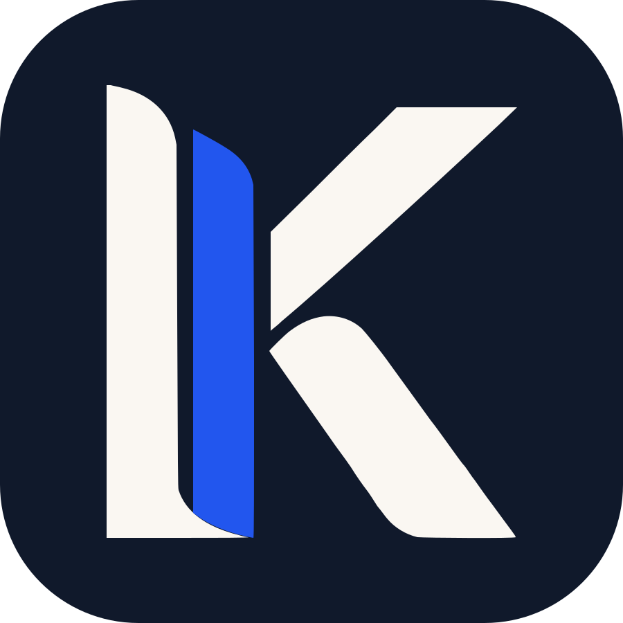

Pięć pytań o organizację, a od razu zobaczycie, czy możecie startować w PROO 1a i NOWEFIO 2027, do jakiej kwoty i jakie są szanse.
Wybierzcie formę, w jakiej organizacja jest zarejestrowana.
Od daty wpisu do KRS albo ewidencji zależy, w których ścieżkach możecie startować.
Chodzi o najlepszy z trzech ostatnich zamkniętych lat. Liczą się wszystkie wpływy, także dotacje, składki i darowizny pieniężne. Od tego zależy, o ile możecie wnioskować.
Regulaminy wykluczają takie sytuacje. Zaznaczcie wszystko, co pasuje, albo ostatnią odpowiedź.
Zaznaczcie co najmniej jedną odpowiedź.
Od tego zależy, który program i priorytet będzie najmocniejszy. Zaznaczcie wszystko, co pasuje.
Zaznaczcie co najmniej jeden cel.
Wynik zobaczycie od razu po kliknięciu. Kontakt zostawiacie po to, żebyśmy mogli porozmawiać o projekcie.
Wystarczy e-mail albo telefon. Formularz trafia do Kapitałowni, szczegóły opisuje polityka prywatności.